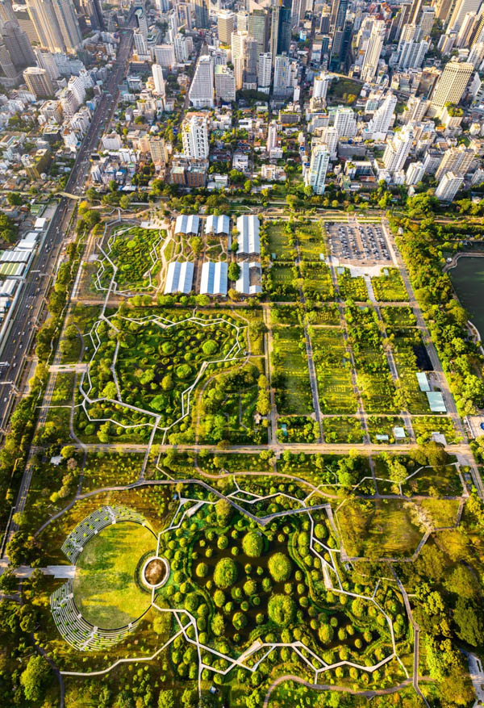
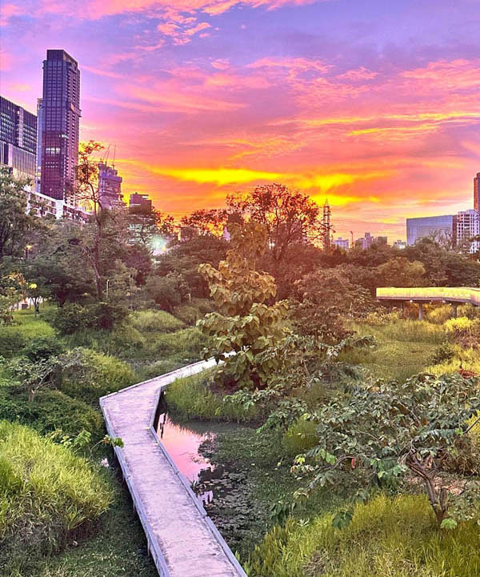

Benjakitti Park (also known as Benjasiri Park) is a stunning 52-hectare public park built on land donated by the Tobacco Authority of Thailand to Queen Sirikit in 1992. Located just 300 meters from Royal Ivory Hotel, this green oasis features a magnificent 20.8-hectare artificial lake surrounded by walking paths, exercise areas, and beautifully landscaped gardens.
Built next to Queen Sirikit Convention Centre to commemorate Her Majesty's 72nd birthday, Benjakitti Park represents Bangkok's commitment to green spaces in urban environments. The park serves as a peaceful retreat where hotel guests can enjoy morning sunrise views, evening fountain shows, and daily exercise routines just steps from their accommodation.
What makes this park exceptional for Royal Ivory guests is the unmatched convenience - you can walk from your hotel room to peaceful, green surroundings within 3 minutes, yet still be in the heart of Bangkok's Sukhumvit district with easy access to Terminal 21, Nana Plaza, and other major attractions.
The park entrance is just a 3-minute walk from Royal Ivory Hotel, making it one of the most convenient attractions for our guests. This proximity allows you to easily incorporate park visits into your daily routine, whether for morning exercise before our complimentary breakfast (served 06:00-10:00) or evening relaxation after exploring Bangkok.
Total walking time: 3 minutes | Distance: 300 meters | Entrance: FREE
💡 Pro Tip from Royal Ivory: Many guests start their day with a 05:30 sunrise jog around the park, return to the hotel for shower and breakfast, then head out to explore Bangkok attractions. The park's early opening (05:00) makes this perfect morning routine possible.
Benjakitti Park spans 52 hectares of meticulously maintained green space, centered around a spectacular artificial lake created from former tobacco factory grounds. The park design balances active recreation areas with peaceful relaxation zones, making it suitable for fitness enthusiasts, families, couples, and solo travelers alike.
The park's crown jewel is a 20.8-hectare artificial lake that serves as the focal point for most activities. This impressive body of water features fountains, aerators, and evening light displays that create a magical atmosphere as the sun sets over Bangkok's skyline. The lake is completely surrounded by a 2.4-kilometer paved jogging and walking track that's popular with both locals and tourists throughout the day.
| Facility | Details & Features | Best Times | Cost |
|---|---|---|---|
| 🏃 Jogging Track | 2.4km paved circuit around lake, distance markers every 500m | 05:30-08:00, 17:00-19:00 | FREE |
| 🚣 Paddle Boats | Rental boats for lake exploration, scenic city views | 14:00-18:00 daily | 100-150 ฿/hour |
| 💪 Outdoor Gym | Free exercise equipment zones, pull-up bars, cardio machines | 06:00-09:00, 16:00-19:00 | FREE |
| 🏀 Basketball Courts | Public courts, equipment rental available nearby | 17:00-20:00 (cooler weather) | FREE |
Benjakitti Park operates daily from 05:00 to 20:00, and different times offer unique experiences. The park's convenient location just 300m from Royal Ivory makes it easy to visit multiple times during your stay, whether for energizing morning workouts or peaceful evening strolls after exploring Bangkok's shopping malls or entertainment districts.
This is truly the golden hour at Benjakitti Park. As Bangkok awakens, you'll experience the park at its most serene and beautiful. The morning air is fresh and significantly cooler than midday temperatures, making it ideal for the 2.4km jogging circuit or brisk walking. Sunrise reflections dance across the lake surface while local Bangkok residents begin their daily exercise routines, offering an authentic glimpse into Thai lifestyle.
As Bangkok's heat subsides, Benjakitti Park transforms into a vibrant social hub. Families arrive for picnics, couples enjoy romantic lakeside walks, and fitness groups gather for evening workouts. The park's fountain system activates around sunset, creating spectacular water displays synchronized with colored lights that reflect beautifully on the lake surface.

Benjakitti Park offers diverse activities suitable for all fitness levels and interests. The variety ensures that whether you're a serious athlete, casual walker, photography enthusiast, or family with children, you'll find engaging options during every visit.
Most popular activities among Royal Ivory guests:
Royal Ivory Hotel's 300-meter proximity to Benjakitti Park creates a unique accommodation experience rarely found in central Bangkok. While most Sukhumvit hotels offer urban convenience, very few provide immediate access to 52 hectares of peaceful green space, making our location truly exceptional for guests seeking balance between city exploration and natural tranquility.
Our guests consistently rate Benjakitti Park access as one of their favorite hotel features. The combination of world-class urban location with immediate nature access creates a Bangkok experience impossible to replicate elsewhere in Sukhumvit.
Recent guest feedback highlights: "Perfect morning jogs before breakfast," "Amazing sunset photos," "Great way to meet locals," "Best hotel location decision we made."
Benjakitti Park is exactly 300 meters (3-minute walk) from Royal Ivory Hotel. Exit our hotel main entrance, walk straight to Sukhumvit Road, turn left, and the park entrance appears on your right. No transportation needed - it's closer than most hotel pools are from guest rooms!
Yes, Benjakitti Park offers completely free admission with no entrance fees whatsoever. All basic facilities including the 2.4km jogging track, walking paths, outdoor gym equipment, basketball courts, and restrooms are available at no cost. Only paddle boat rentals (approximately 100-150 Baht per hour) require payment.
Benjakitti Park operates daily from 05:00 to 20:00 (5:00 AM to 8:00 PM). These hours accommodate both early morning exercisers who prefer sunrise jogging and evening visitors who enjoy sunset walks. The park's early opening time perfectly complements Royal Ivory's breakfast service (06:00-10:00).
The park offers diverse activities: 2.4km jogging track around the artificial lake, paddle boat rentals for lake exploration, free outdoor gym equipment zones, basketball courts, dedicated cycling paths, children's playground areas, photography opportunities, bird watching, and peaceful walking areas. Most activities are completely free.
Outstanding for morning exercise! The 2.4km paved jogging track around the lake is extremely popular with both locals and tourists. Cool morning temperatures (05:30-08:00), beautiful sunrise views over the water, fresh air, and peaceful atmosphere create ideal workout conditions. Distance markers and water fountains support serious training.
Operating Hours: Daily 05:00 - 20:00 (15 hours daily)
Entrance Fee: FREE admission
Total Size: 52 hectares (130 acres)
Lake Size: 20.8 hectares artificial lake
Jogging Track: 2.4 kilometers paved circuit
Distance from Royal Ivory: 300 meters (3-minute walk)